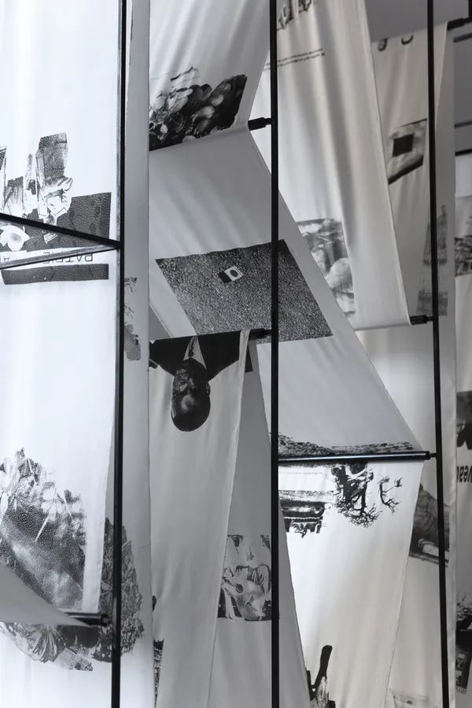

L'exploration artistique d'Adji Dieye se concentre sur l'examen des représentations pour comprendre la construction des épistémologies nationales. S'intéressant aux structures sociopolitiques qui façonnent notre monde globalisé, Dieye observe comment les images d'autodétermination et de développement se matérialisent dans la sphère publique, en particulier dans les régions anciennement colonisées. Dans sa pratique, l'artiste appuie sur le bouton pause pour examiner de manière critique les éléments potentiellement conflictuels, les lacunes et les réalisations ultérieures essentielles dans le processus d'élaboration d'une identité nationale renouvelée au sein des espaces publics et des institutions nationales. En utilisant des documents d'archives, l'architecture et la publicité, Dieye remet en question la corrélation entre notre compréhension ontologique et les paradoxes inhérents à l'élaboration d'un récit national de progrès. Télécharger le CV de l'artiste (PDF, opens in a new tab.) Privacy Policy Manage cookies Copyright © 2026 Galerie Cécile Fakhoury Site by Artlogic Go Souscrivez à notre bulletin Instagram , opens in a new tab. Facebook , opens in a new tab. This website uses cookies This site uses cookies to help make it more useful to you. Please contact us to find out more about our Cookie Policy. Manage cookies Reject non essential Accept Cookie preferences Check the boxes for the cookie categories you allow our site to use Cookie options Strictly necessary Required for the website to function and cannot be disabled. Preferences and functionality Improve your experience on the website by storing choices you make about how it should function. Statistics Allow us to collect anonymous usage data in order to improve the experience on our website. Marketing Allow us to identify our visitors so that we can offer personalised, targeted marketing.
Expositions à la galerie